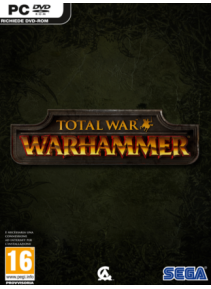

Total War este o serie de jocuri de strategie de succes, bazate pe razboaie şi campanii istorice. Aceste jocuri sunt o combinaţie de strategie pe runde şi batalii tactice în timp real. Seria este elaborată de The Creative Assembly şi distribuită de Electronic Arts, Activision şi Sega. Primul joc din serie a fost Shogun: Total War, iar ultimul Total War: Attila.Seria oferă mai multe moduri de joc: campanie (jocul are loc pe un teritoriu oarecare al Pamântului, într-o anumita perioada istorică; numai în campanie este disponibil modul strategic), luptă istorică (modul strategic are o asemanare cu seria de jocuri Civilization: pe hartă, cu „iconiţe” speciale sunt marcate armată, flotă, agenţii şi oraşele. Harta este ascunsă sub „ceaţa razboiului”.
Preţ : 58,24 €